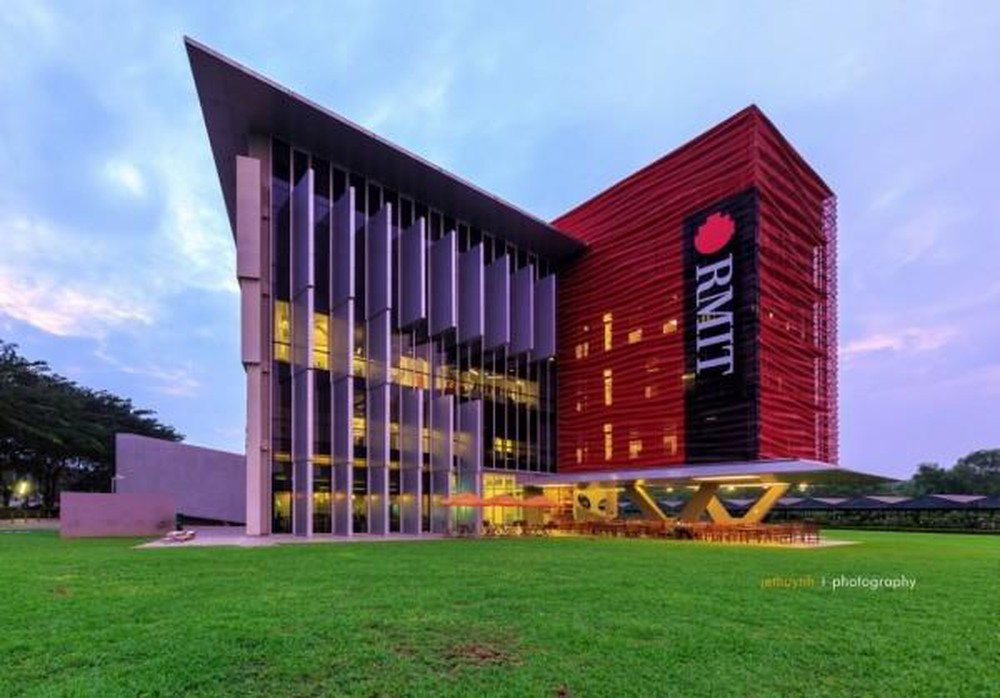
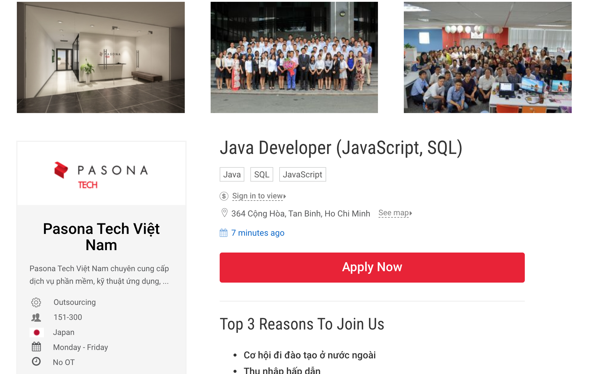
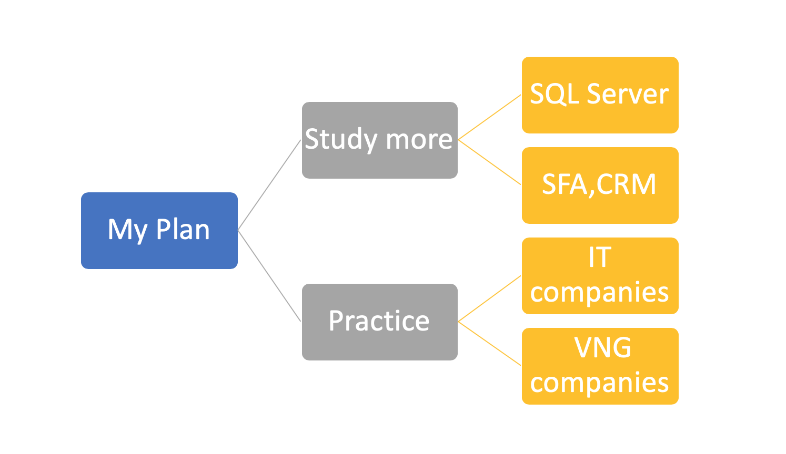

November 8,2019
My name is Long. But, people can call me by another name Genm. At the moment, I am studying at RMIT University and my major is IT. My student number is s3757961 and my email is s3757961@rmit.edu.vn. I was born in Vietnam and lived with my family in Hanoi. However, last year, I made a decision to move to HCM city to follow my dream because RMIT Hanoi did not have my favorite field. In addition, to learn at this university, I have to try a lot of to learn English because most lecturers are foreigners. Besides, I also want to study abroad in Melbourne to broaden my knowledge so I think English is an important aspect to help me to get a bigger success in the future. A few other interesting things about me are that I am an animal lover. I seem to be able to spend all day playing with them. Besides, I also enjoy playing games in my free time, which is probably the reason why I want to learn and pursue information technology.

What makes me most interesting about information technology is programming. I liked IT when I was a boy. Ever since I was 10, my parents bought me a new computer. And maybe from then on, my curiosity inspired me to dig deeper into it. The more I study, the more I see the vast IT world. Not only that, I was a kid who loved games, I always wanted to explore to understand how games work, how to create them, etc. Besides, when I was in high school, I used to join a computer club. Here, I learned how to design simple 8-bit graphics games like mario, tennis and puzzles. I really loved it, and that's why I followed the path of IT learning.

To be honest, there are many reasons for me to choose to study at RMIT University. The first is probably about this being an international school. Here, I can learn and experience with many people from all over the world. Not only that, studying here also helps me a lot in improving English quickly, I can always learn English with everyone here. "Always learn from the best". Moreover, this school also has a field in information technology, which I always try to learn. The school is also very attentive when fully equipped to support students to study most effectively. I always hope that choosing RMIT University is a right step in my life. I wish I could learn and understand more about the IT world when I study here.

I am very interested in this job because it meets the major that I am studying, it is about information technology programming. I have learned a lot about the "JAVA" programming language and I really want to learn about it. Besides, this job also has the cooperation of strong partners like Japan so I can exchange and learn more knowledge from them. And finally, the great working environment here, the comfort and closeness can help boost the productivity of employees.
Experience in developing applications with Java Web (Servlet), SQL Server (MSSQL, Oracle).
Knowledge of HTML / CSS, JavaScript (JQuery).
Ability to review source code, test (Unit Test).
Prefer candidates with knowledge of SFA (Sales force Automation) or CRM.
Ability to communicate in English.
Priority to candidates who know Japanese or have experience working at Japanese companies.
I myself feel that I am almost qualified to do this job. Because I also had experience developing Java Web applications. In addition, I also had time to learn and research on HTML / CSS. And especially when I study at RMIT University, I am also learning how to work in an English environment and work in a foreign environment.

In general, it seems that I am still not ready for this job, and I need a more specific plan to get this job. First, start with learning and learning more about SQL Server (MSSQL, Oracle) through the time studying at school. During the time in university, I will try to work part-time for some companies, collect a lot of experiences and get profits for their company. Currently, I have my English and ability to study by myself, which is still normal and I have to try more. I am sending my CV to some companies about IT, which helps me to improve my practical in reality. I also love games so that I choose VNG companies to apply for a part-time job. It can satisfy my concerns about technology.